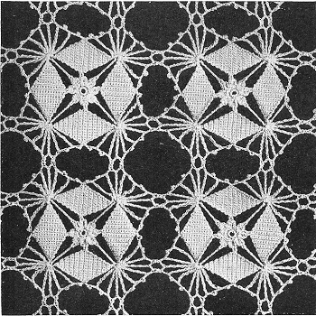

|
Crystal Web Bedspread MATERIALS: CLARK'S O.N.T. or J. & P. COATS BIG BALL BEST SIX CORD MERCERIZED CROCHET, size 30, 44 balls of White or Ecru, or 59 balls of any color for single size spread; 55 balls of White or Ecru; or 73 balls of any color for double size spread. MILWARD'S steel crochet hook No. 10 or 11. GAUGE: Each motif measures 3 1/2 inches in diameter. For a single size spread, about 72 x 108 inches, make 21 x 31 motifs. For a double size spread, about 90 x 108 inches, make 26 x 31 motifs. MOTIF: Starting at center, ch 7, join with sl st. 1st rnd: 8 sc in ring; join. 2nd rnd: * Ch 4, 3-tr cluster in same place as sl st-to make cluster, make 3 tr, holding back the last loop of each tr on hook; thread over and draw through all loops on hook. Ch 4, sl st in tip of cluster (a p made); ch 4, sl st at base of cluster, sl st in next sc. Repeat from * 7 more times; join. Fasten off. DIAMONDS: Starting at one end, ch 3. 1st row: Sc in 3rd ch from hook. Ch 2, turn. 2nd row: 2 sc in sc. Ch 2, turn. 3rd row: 2 sc in 1st sc, sc in next sc. Ch 2, turn. 4th row: 2 sc in 1st sc, sc in each sc across. Ch 2, turn. Repeat 4th row until there are 13 sc in the row. Then make a sl st in p at tip of 1 petal of flower. Ch 1, turn. Next row: Sc in each sc across. Ch 2, turn. Following row: Skip 1 sc, sc in each sc across. Ch 1, turn. Repeat the last row until 1 sc remains. Next row: Sc in sc, a long tr (thread over 5 times) in next p of next petal flower; make another diamond as before. Repeat from * around, ending with a long tr; sl st in tip of first diamond. This completes 2nd rnd. 3rd rnd: Ch 18, sl st in 5th ch from hook (a p made); ch 2, sc in center point of 1st diamond. ** Ch 1, p, ch 2, long tr in next long tr (between diamonds), * ch 1, p, ch 2, tr tr in same place as long tr. Repeat from * 6 more times, ch 1, p, ch 2, long tr in same place (a fan). Ch 1, p, ch 2, sc in center point of next diamond. Repeat from ** around, omitting last long tr of last fan; then sl st in 12th ch of ch-18 first made. Fasten off. This completes one motif. Make another motif to within 3rd rnd. 3rd rnd: Ch 18, sl st in 5th ch from hook, ch 2, sc in center point of 1st diamond. Ch 1, p, ch 2, long tr in next long tr, * ch 1, p, ch 2, tr tr in same place as long tr. Repeat from * 4 more times; ch 3, sl st in 4th p of first motif (counting from sc at center of diamond), ch 2, sl st in 3rd ch from sl st back on second motif; ch 2, tr tr in same place as last tr tr, ch 3, sl st in next p back on first motif, ch 2, sl st in 3rd ch from sl st back on second motif, ch 2, tr tr in same place as last tr tr, ch 1, p, ch 2, long tr in same place, ch 1, p, ch 2, long tr in next long tr, ch 1, p, ch 2, tr tr in same place. Continue as for 3rd rnd of first motif, joining next 2 p's to 2 adjacent p's of first motif, and complete rnd. Make necessary number of motifs, joining 4 p's of each motif to 4 p's of adjacent motifs, leaving 2 p's free on each motif between joinings.  HOME |